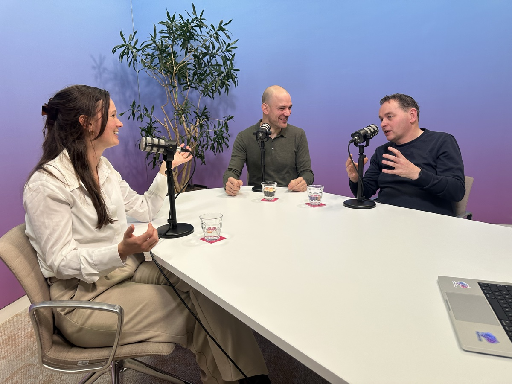
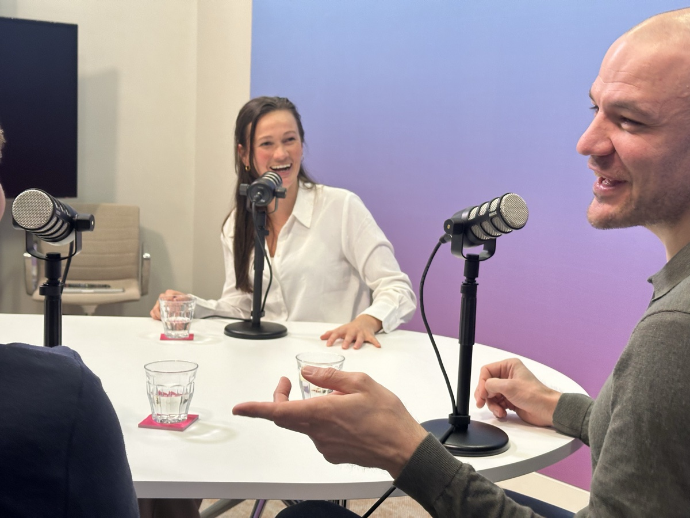
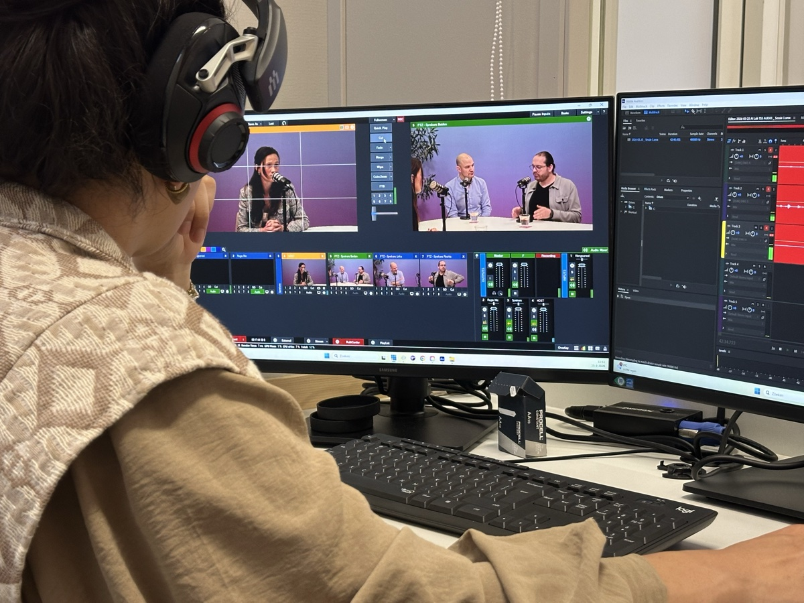

Van format tot distributie, van host-coaching tot sociale snippets, dit is het werk dat we voor onze opdrachtgevers hebben verzorgd.

PharmaPartners is een van de grootste softwareleveranciers voor de eerstelijnszorg in Nederland. Ze vroegen ons om hun AI-transformatie hoorbaar te maken, voor hun eigen mensen én voor de buitenwereld.
We ontwikkelden het volledige format, coachten de hosts op presentatie en gespreksvoering, instrueerden de gasten op beeldvorming en heldere communicatie, en namen de volledige productie op locatie voor onze rekening. Van de eerste conceptsessie tot het uploaden van elke aflevering: wij regelden het.
Het resultaat: een podcastserie die interne AI-trajecten inzichtelijk maakt, het merk versterkt én nieuwe gesprekken opent met potentiële klanten en partners in de zorgsector.
Wat we leverden: conceptontwikkeling · formatdesign · locatieopname · host-coaching · gastinstructie · montage & mix · distributie op alle platformen · social media snippets

Magenta bouwde een AI-agent die zelfstandig bugs detecteert, analyseert en grotendeels oplost. Een bijzonder verhaal, en precies het soort inhoud dat verdient om gehoord te worden.
We zetten het concept op, bepaalden de gespreksstructuur en zorgden dat de technische diepgang toegankelijk bleef voor een breder publiek. De host werd gecoacht op doorvragen en tempo, de gast op heldere uitleg van complexe materie. Tijdens de opname stuurden we live mee op inhoud en energie.
De aflevering laat zien wat er gebeurt als een heel softwareteam een week lang volledig op AI focust, en wat dat concreet oplevert in snelheid, kwaliteit en teamdynamiek.
Wat we leverden: conceptontwikkeling · formatdesign · locatieopname · host-coaching · gastinstructie · montage & mix · distributie op alle platformen · social media snippets

Veel AI-prototypes blijven hangen in demo's. Softwareontwikkelaar Max Salden bouwde de pipelines om vibe coding-projecten snel en betrouwbaar naar productie te brengen, en wij maakten dat verhaal hoorbaar.
Dit was een technisch verhaal voor een breed publiek. We ontwikkelden een format waarbij begrippen als "vibe coding" en "CI/CD-pipelines" begrijpelijk werden zonder oppervlakkig te worden. Storio begeleidde het hele proces: van de eerste briefing met Max tot de gepubliceerde aflevering inclusief social clips.
Achter de schermen was een volledige productieploeg aan het werk: camerabewaking, live-regie, geluidsmonitoring en contentbegeleiding, zodat de gast en host zich volledig konden focussen op het gesprek.
Wat we leverden: conceptontwikkeling · formatdesign · locatieopname · productieregie · host-coaching · gastinstructie · montage & mix · distributie op alle platformen · social media snippets
We denken graag mee over format, aanpak en distributie. Altijd op locatie, altijd op maat.
Plan een kennismaking →